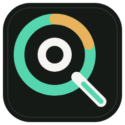
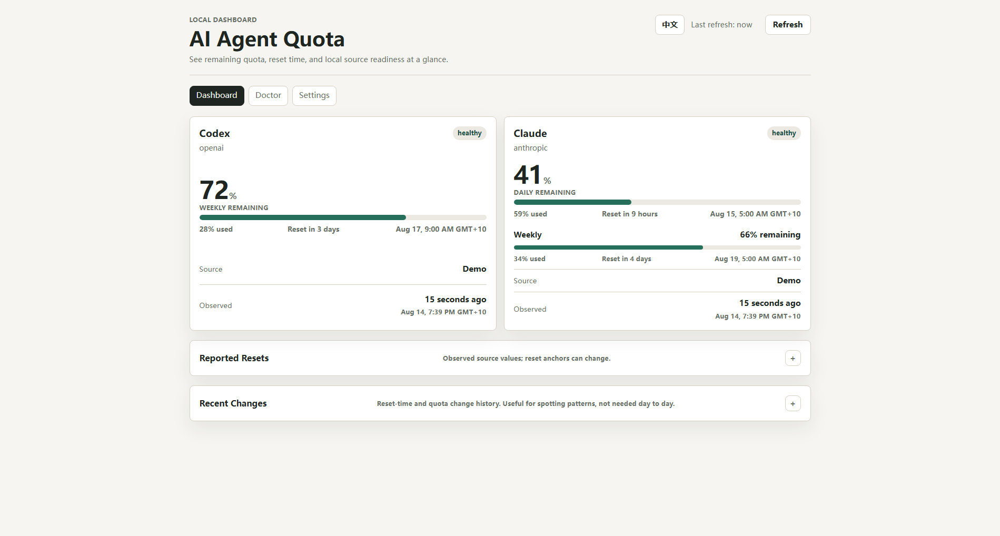
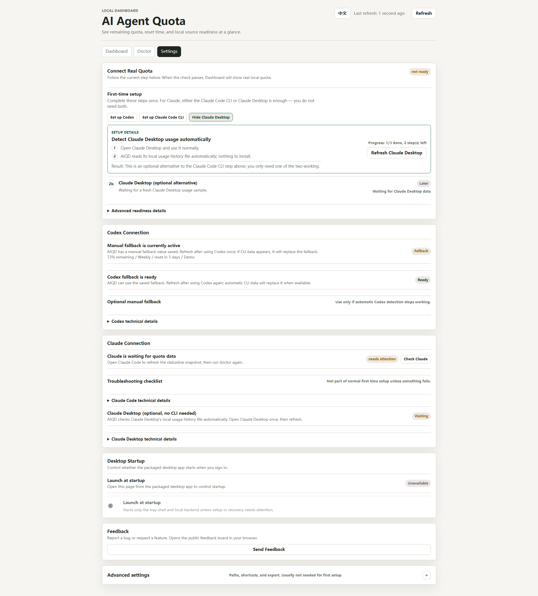
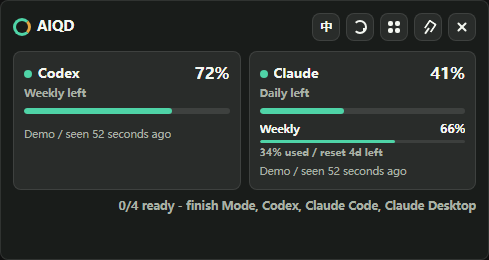

Codex CLI
Reads supported local rate_limits events when Codex
writes them, with a visible-status manual fallback.

AIQD
v0.1.0 desktop preview
Local quota dashboard for Codex and Claude. See what is left, when it resets, and whether the local source is ready.
Windows x64 desktop preview. Download from GitHub Releases.
Local-first by design
AIQD still runs on your own machine. The desktop app starts a local
service on 127.0.0.1, reads narrow quota-related local
files from tools you already use, and renders the dashboard locally.
Reads supported local rate_limits events when Codex
writes them, with a visible-status manual fallback.
Reads local plan usage samples from Claude Desktop. No Claude Code CLI setup is required for desktop-only users.
Captures official statusline rate_limits fields
through an explicit local setup step.
Privacy boundary
Product screenshots


Download
Download from GitHub Releases, install the app, then open the local dashboard from the desktop shortcut.
Installer-first desktop preview for early testers.
7DDE28E8FE424268C752480889DBBEABFD5578D9D20D5EE77DAE117ADE867F6D
Windows may show an unknown-publisher or SmartScreen warning.